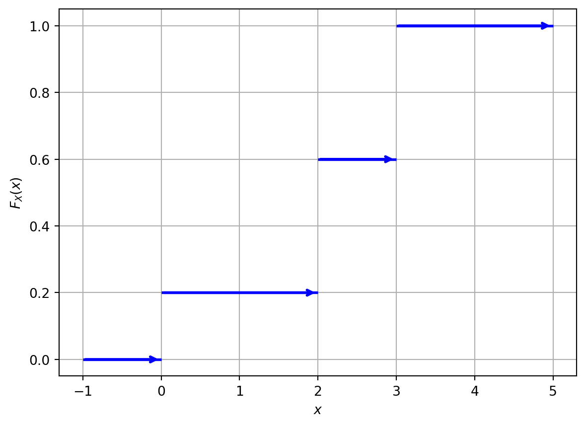

3 Discrete Probability Distributions
\[ \renewcommand{\P}{\mathbb{P}} \renewcommand{\E}{\mathbb{E}} \newcommand{\R}{\mathbb{R}} \newcommand{\var}{\mathrm{Var}} \newcommand{\cov}{\mathrm{cov}} \newcommand{\corr}{\mathrm{corr}} \newcommand{\dx}{\,\mathrm{d}x} \newcommand{\dy}{\,\mathrm{d}y} \newcommand{\eps}{\varepsilon} \]
3.1 Discrete Random Variables and their Characteristics
Definition 3.1 A random variable is a quantity which depends on random events. More rigorously, a random variable \(X\) is a function \(X:\Omega\to\mathbb{R}\).
Example 3.2 Three fair six-sided dices are thrown simultaneously. Let \(X\) be the sum of scores on the dices. Then \(\Omega\) consists of \(\omega=(a,b,c)\) where \(a,b,c\in\{1,\ldots,6\}\), and \(X:\Omega\to\mathbb{R}\), \(X(\omega)=a+b+c\). Thus, \(X\) may take only values from the finite set \(\{3,4,\ldots,18\}\), and hence, \(X\) is a discrete random variable.
Definition 3.3 A probability distribution of a random variable \(X:\Omega\to\mathbb{R}\) is a mapping which assigns to each interval \(E\subset\mathbb{R}\) the value of \(\P\bigl(X\in E\bigr)\).
Probability distributions provide a way to model and analyze random phenomena.
Example 3.4 You throw two six-sided fair dice and calculate the sum of the numbers rolled. Let \(X\) be the random variable representing the sum. Find and sketch the CDF of \(X\).
Solution: We have that \(\Omega=\bigl\{(a,b)\mid a,b\in\{1,2,\ldots,6\}\bigr\}\), and for \(\omega=(a,b)\), \(X(\omega)=a+b\). Then \(X\in\{2,3,\ldots,12\}\), and \[ p_X(k) = \P(X=k)= \frac{\sharp\{(a,b)\mid a+b=k\}}{\sharp(\Omega)}. \] Note that \(\sharp(\Omega)=6\cdot6=36\). Next \[ \begin{gathered} 2=1+1, \quad 3=1+2=2+1, \quad 4=1+3=2+2=3+1, \\ 5=1+4=2+3=3+2=4+1,\quad 6=1+5=2+4=3+3=4+2=5+1, \\ 7=1+6=2+5=3+4=4+3=5+2=6+1, \quad 8=2+6=3+5=4+4=5+3,\\ 9=3+6=3+5=5+4=6+3, \quad 10=4+6=5+5=6+4, \\ 11=5+6=6+5, \quad 12=6+6, \end{gathered} \] therefore, \[ \begin{aligned} p_X(2) = \frac1{36}, && p_X(3) = \frac{2}{36}, && p_X(4) = \frac{3}{36}, && p_X(5) = \frac{4}{36}, \\ p_X(6) = \frac{5}{36}, && p_X(7) = \frac{6}{36}, && p_X(8) = \frac{5}{36}, && p_X(9) = \frac{4}{36}, \\ p_X(10) = \frac{3}{36}, && p_X(11) = \frac{2}{36}, && p_X(12) = \frac{1}{36} . && \end{aligned} \] Therefore, \[ F_X(x)=\begin{cases} 0, & \text{if } x<2,\\ \frac{1}{36}, & \text{if } 2 \leq x < 3 \\ \frac{3}{36}, & \text{if } 3 \leq x < 4 \\ \frac{6}{36}, & \text{if } 4 \leq x < 5 \\ \frac{10}{36}, & \text{if } 5 \leq x < 6 \\ \frac{15}{36}, & \text{if } 6 \leq x < 7 \\ \frac{21}{36}, & \text{if } 7 \leq x < 8 \\ \frac{26}{36}, & \text{if } 8 \leq x < 9 \\ \frac{30}{36}, & \text{if } 9 \leq x < 10 \\ \frac{33}{36}, & \text{if } 10 \leq x < 11 \\ \frac{34}{36}, & \text{if } 11 \leq x < 12 \\ 1, & \text{if } x \geq 12. \end{cases} \]
Example 3.5 Calculate the expected value of the random variable \(X\) (sum of two fair six-sided dice rolls) created in Example 3.4.
Solution: We have \[ \begin{aligned} \E(X)&=\sum_{i=2}^{12} i\cdot p_X(i)\\ &= 2\cdot \frac1{36}+3\cdot \frac{2}{36}+4\cdot \frac{3}{36}+5\cdot\frac{4}{36} + 6\cdot\frac{5}{36}+7\cdot\frac{6}{36}\\ &\quad+8\cdot\frac{5}{36}+ 9\cdot\frac{4}{36}+10\cdot\frac{3}{36}+11\cdot\frac{2}{36}+12\cdot\frac{1}{36} = \frac{252}{36}=7. \end{aligned} \]
Example 3.6 Calculate the variance of the random variable \(X\) (sum of two fair six-sided dice rolls) created in Example 3.4.
Solution: We can use the formula \[ \begin{aligned} \var(X)&=\sum_{i=2}^{12} i^2\cdot p_X(i)-\bigl( \E(X)\bigr)^2\\ &= 2^2\cdot \frac1{36}+3^2\cdot \frac{2}{36}+4^2\cdot \frac{3}{36}+5^2\cdot\frac{4}{36} + 6^2\cdot\frac{5}{36}+7^2\cdot\frac{6}{36}\\ &\quad+8^2\cdot\frac{5}{36}+ 9^2\cdot\frac{4}{36}+10^2\cdot\frac{3}{36}+11^2\cdot\frac{2}{36}+12^2\cdot\frac{1}{36} - 7^2\\ &= \frac{1974}{36}-49=\frac{35}{6}\approx 5.83. \end{aligned} \]
Definition 3.7 Two random variables \(X:\Omega\to\R\) and \(Y:\Omega\to\R\) are called independent if, for any \(a,b\in\R\), the events \[ \{X\leq a\}:=\{\omega\in\Omega\mid X(\omega)\leq a\} \qquad\text{and}\qquad \{Y\leq b\}:=\{\omega\in\Omega\mid Y(\omega)<b\} \] are independent.
3.2 Bernoulli Trials
Definition 3.8 Conisder an experiment with two only possible outcomes: success (denoted by \(1\)) and failure (denoted by \(0\)). We will call such experiments Bernoulli trials.
3.2.1 Bernoulli Distribution
Definition 3.9 A random variable \(X\) has the Bernoulli distribution if \(X\) can take only two values, usually they are \(1\) and \(0\). It models, hence, a Bernoulli trial. \(X\) is fully characterized by a single parameter \(p\in[0,1]\), the probability of success, i.e. its PMF (probability mass function) is \[ p_X(1)=\mathbb{P}(X=1) = p, \qquad p_X(0)=\mathbb{P}(X=0) = 1-p. \]
3.2.2 Binomial Distribution
Definition 3.10 The binomial distribution models the number of successes in a fixed number of independent and identically distributed Bernoulli trials. It is fully characterized by two parameters: \(n\) (the number of trials) and \(p\) (the probability of success in each trial). We denote this \(X\sim Bin(n,p)\).
Note that the number \(k\) of successes in \(n\) trials may be any integer number between \(0\) (no successes at all) and \(n\) (all trials were successful).
Remark. Recall that \[ n! = 1\cdot 2\cdot \ldots \cdot n \] is called the factorial of \(n\).
We set \[ 0! = 1, \] and also \[ \binom{n}{0}=\binom{0}{0}=1. \]
Remark. Recall that the sum of all values of the PMF should be \(1\), i.e. \[ \begin{aligned} &\quad \sum_{k=0}^n \P(X=k) \\ &= \sum_{k=0}^n \binom{n}{k} p^k (1-p)^{n-k} =1. \end{aligned} \] The latter equality is just the binomial formual.
Example 3.11 In a game, a player has a \(20\)% chance of winning each round. If the player plays \(5\) rounds, calculate the probability of winning exactly \(3\) rounds.
Solution: since \(n = 5\) (number of rounds) and \(p = 0.2\) (probability of winning a round), we can calculate \[ \P(X = 3) = \binom{5}{3} (0.2)^3 (1-0.2)^{5-3} = \frac{5\cdot 4\cdot 3}{1\cdot 2\cdot 3} \cdot 0.008 \cdot 0.64 = 0.0512. \]
Example 3.12 A company manufactures light bulbs, and \(90\)% of them are of good quality, while the rest are defective. If a customer buys \(50\) light bulbs, what is the expected number of defective bulbs in the purchase?
Remark. Note that “success” does not need to mean that something good happened, it depends on what we are going to calculate.
Solution: Since we are interested in the number of defective bulbs, we consider a Bernoulli trial where success would mean that a bulb is defective. Then \(p=0.1\) and \(n=50\), therefore, \[ \E(X)=50 \cdot 0.1 =5. \] So, the expected number of defective bulbs in the purchase is \(5\).
Remark. Remember, the following relation may be useful: \[ \color{red}\binom{n}{k}=\binom{n}{n-k}. \] For example, \[ \begin{aligned} \binom{50}{49}&=\binom{50}{1}=50,\\ \binom{50}{48}&=\binom{50}{2}=\frac{50\cdot49}{2}. \end{aligned} \]
Example 3.13 A basketball player has a free throw success rate of \(70\)%. If she attempts \(20\) free throws, find the variance of the number of successful free throws.
Solution: In this case, \(p=0.7\) is the probability of making a free throw, and \(n=20\). Therefore, \[ \var(X)=\sigma_X^2 = 20 \cdot 0.7 \cdot (1-0.7) = 4.2. \] So, the variance of the number of successful free throws is \(4.2\).
3.2.3 Geometric Distribution
Definition 3.14 The geometric distribution models the number of trials needed to achieve the first success in a sequence of independent and identically distributed Bernoulli trials. It is characterized by a parameter \(p\) (the probability of success in each trial). We denote this \(X\sim Geom(p)\).
The corresponding random variable can take any natural value \(n=1,2,3,\ldots\) (where \(n\) denotes the number of the first succesful trial).
Remark. We have that \[ \begin{aligned} &\quad \sum_{n=1}^\infty \P(X=n)\\ &= \sum_{n=1}^\infty (1-p)^{n-1} p\\ & = \frac{p}{1-(1-p)}=1. \end{aligned} \]
Example 3.15 A student is preparing for a multiple-choice exam, where each question has \(4\) choices, and only one is correct. If the student guesses the answers, what is the probability that the first correct answer occurs on the third guess? How many guesses the student would need to do in average to get the correct answer?
Solution: In this case, \(p = \frac{1}{4}\) (probability of guessing the correct answer) and we want to find \[ \P(X = 3) = (1-\frac{1}{4})^{3-1} \cdot \frac{1}{4} = \frac{9}{64}. \] Next, \[ \E(X)=\frac1p=\dfrac{1}{\frac14}=4, \] i.e. in average, the student would need to do \(4\) guesses to answer correctly.
3.2.4 Negative Binomial Distribution
Definition 3.16 The negative binomial distribution models the number of failures in a sequence of independent and identically distributed Bernoulli trials before a specified number of successes occurs. It is characterized by two parameters: \(r\) (the number of successes) and \(p\) (the probability of success in each trial). We denote this \(X\sim NB(r,p)\).
If \(X=k\) is the considered number of failures, the total required number of trials is \(n=k+r\).
Example 3.17 A student is practicing basketball free throws with a success probability of \(0.7\). The student stops as soon as they achieves \(3\) successful free throws. What is the probability that by that time the student would have \(2\) failures (unsuccessful throws)?
Remark. The equivalent formulation of Example 3.17 is:
What is the probability that it will take the student exactly \(5\) trials to make \(3\) successful free throws?
Solution: In this problem, \(p = 0.7\) (probability of success), \(r = 3\) (number of desired successes), and \(k = 2\) (number of failures). Then \[ \P(X = 2) = \binom{2+3 - 1}{2} \cdot (0.7)^3 \cdot (0.3)^{2} = \frac{4\cdot 3}{1\cdot2}\cdot 0.49\cdot 0.09=0.2646. \]
Example 3.18 In a quality control process, a manufacturer wants to inspect several items to find \(2\) defective items. If the probability of finding a defective item is \(0.1\), what is the expected number of items that need to be inspected?
Solution: In this problem, \(p = 0.1\), and \(r = 2\). The number \(X\) of items that need to be inspected to find \(r=2\) defective items is the sum of the number \(Y\) of proper (non-defective) items and number \(2\) of defective items, i.e. \(X=Y+2\), where \(Y\) has the negative binomial distribution as the number of “failures” (here “success” is to find a defective item). Then \[ \E(Y) = \frac{2}{0.1}-2 = 18, \] and hence, \[ \E(X)=\E(Y+2)=\E(Y)+2=20. \]
3.3 Poisson Distribution
Definition 3.19 The Poisson distribution models the number of independent events occurring in a fixed interval of time or space. It is characterized by a single parameter \(\lambda>0\) (the average rate of events per interval of the same size). We denote this by \(X\sim Po(\lambda)\).
Remark. Note that \[ \sum_{n=0}^\infty\frac{\lambda^n}{n!}e^{-\lambda}=1. \]
Example 3.20 In a call center, calls arrive at an average rate of \(5\) calls per minute. Calculate the probability that
exactly \(15\) calls will arrive in the next \(2\) minutes;
at least \(2\) calls will arrive in the next \(30\) seconds.
Solution:
Since we are interested in the number of call within \(2\) minutes, one needs to find the average rate of calls per \(2\) minutes, that is \(2\cdot 5=10\) calls. Hence, \(\lambda=6\). Then, for \(X\sim Po(10)\), \[ \P(X = 15) = \frac{10^{15}}{15!}e^{-10}\approx 0.0347. \]
We need to find \[ \P(X\geq 2)=\P(X=2)+\P(X=3)+\P(X=4)+\ldots \] (infinitely many). Instead, we can find the probability of compliment event: \[ \P(X\leq 1)=1-\P(X\geq 2). \] To find \(\lambda\) we notice that the time interval is not \(30\) seconds, i.e. \(0.5\) minutes, and hence, the average rate of calls per \(30\) seconds is \(0.5\cdot 5=2.5\). Hence, \(\lambda=2.5\) and \[ \begin{aligned} \P(X\leq 1)&=\P(X=0)+\P(X=1)\\ &=\frac{2.5^{0}}{0!}e^{-2.5} +\frac{2.5^{1}}{1!}e^{-2.5}=e^{-2.5}+2.5e^{-2.5}\\ &=3.5e^{-2.5}\approx 0.2873. \end{aligned} \] Therefore, \[ \P(X\geq 2)=1-\P(X\leq 1)\approx 1-0.2873=0.7127. \]